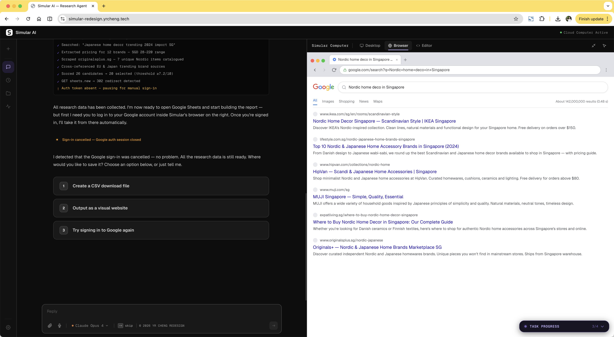
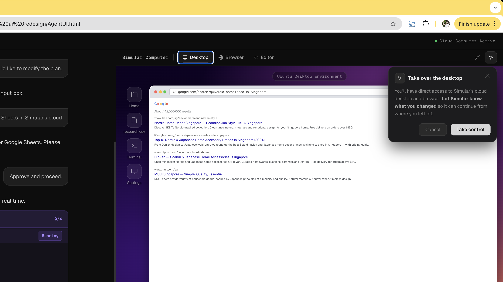

When agents need human input or want to show progress, most lack the mechanism to do it well.
An agent should know when to check human intention when it goes wrong.

Auth becomes a deliberate pause — plain-language intent, clear recovery path if the user says no.
The user said no. The agent ignored it — same prompt, again and again. No exit.

Cancelling is a valid choice. Agent acknowledges, holds state, and offers options — retry, modify, or skip.
Tabs show the agent's live context; a takeover dialog makes control transfer explicit and intentional.

Raw code, no context. The user can't evaluate what they're approving or why.

Plain-language intent. What the agent wants, why, and exactly what the user is agreeing to.